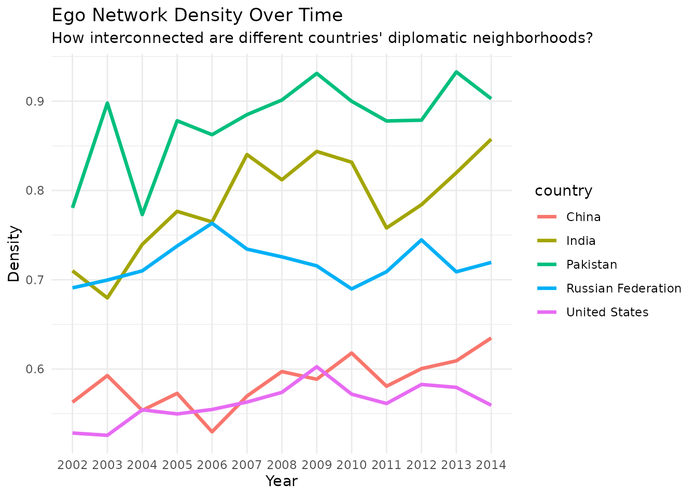
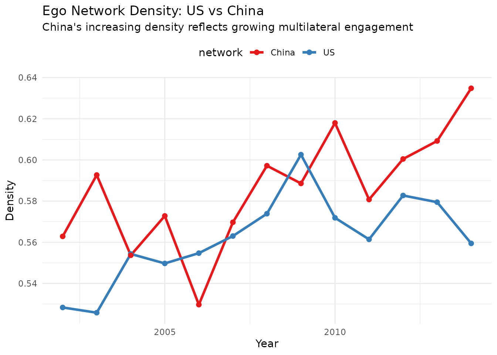

Ego Networks
Cassy Dorff and Shahryar Minhas
2025-07-03
Source:vignettes/ego_networks.Rmd
ego_networks.RmdThis vignette shows how netify handles ego networks—the
network surrounding a specific actor and their immediate
connections.
What Are Ego Networks?
An ego network focuses on one actor (the “ego”) and includes:
- The ego: Your focal actor
- The alters: Actors directly connected to the
ego
- Alter-alter ties: Connections between the ego’s neighbors
Think of it as zooming in on one node and asking: “Who are their connections, and how are those connections related to each other?”
Examples
Pakistan’s diplomatic neighborhood includes not just major powers (US, China) but regional rivals (India) and neighbors (Afghanistan). The connections between these alters matter—does Pakistan broker between disconnected partners or navigate a densely connected region?
A senator’s ego network reveals their coalition partners, but also whether those partners work together or represent distinct constituencies the senator must balance.
An activist organization’s ego network shows both allies and the broader movement structure—are they bridging disconnected groups or embedded in a tight cluster?
Why Ego Networks Matter
Ego networks let you apply network thinking without needing complete network data. You can study:
- How actors manage competing relationships
- Whether similar actors cluster together (homophily)
- How an actor’s position affects their influence
- Whether an actor brokers between otherwise disconnected groups
Getting Started: Extract an Ego Network
We’ll use data from the Integrated Crisis Early Warning System (ICEWS) to demonstrate:
# Load ICEWS data
data(icews)
# Create a network of verbal cooperation between countries
netlet <- netify(
icews,
actor1 = "i", actor2 = "j",
time = "year",
weight = "verbCoop",
nodal_vars = c("i_polity2", "i_log_gdp", 'i_region'),
dyad_vars = c("matlCoop", "verbConf")
)Extract Your First Ego Network
The ego_netify() function makes extraction
straightforward:
# Extract Pakistan's ego network
pakistan_ego_net <- ego_netify(
netlet,
ego = "Pakistan"
)
# That's it! You now have Pakistan's ego network across all years
print(pakistan_ego_net)Key Features
1. Network Statistics
# Get network-level stats
ngbd_summ <- summary(pakistan_ego_net)
head(ngbd_summ)
#> net num_actors density num_edges prop_edges_missing mean_edge_weight
#> 1 2002 33 0.7805326 850 0 182.9545
#> 2 2003 28 0.8979592 704 0 285.6905
#> 3 2004 49 0.7730112 1856 0 101.3461
#> 4 2005 44 0.8780992 1700 0 138.4968
#> 5 2006 40 0.8625000 1380 0 150.0731
#> 6 2007 39 0.8849441 1346 0 182.9852
#> sd_edge_weight median_edge_weight min_edge_weight max_edge_weight competition
#> 1 541.2426 16.0 0 5760 0.08270328
#> 2 718.2698 43.5 0 5937 0.08521930
#> 3 369.8192 11.0 0 5141 0.06014910
#> 4 475.6012 19.0 0 6561 0.06605279
#> 5 531.0351 18.0 0 7579 0.07536095
#> 6 553.8835 28.0 0 6698 0.06860271
#> sd_of_actor_means transitivity
#> 1 244.3143 0.8513921
#> 2 342.5283 0.9417385
#> 3 142.8899 0.8390159
#> 4 193.4328 0.9174501
#> 5 215.7135 0.9116163
#> 6 239.9547 0.9247124Pakistan’s network shows remarkably high density (0.78-0.89)—most countries that interact with Pakistan also interact with each other. The network size fluctuates between 28-49 actors across years, but that high density persists. This isn’t a hub-and-spoke pattern where Pakistan connects otherwise isolated actors; it’s a dense web where multilateral dynamics likely matter.
# Visualize trends
plot_graph_stats(ngbd_summ) +
scale_x_discrete(
breaks = seq(2002, 2014, by = 4)
) +
theme(
axis.text.x=element_text(angle=45, hjust=1)
)
Notice the consistently high transitivity (~0.85-0.94). Pakistan’s partners tend to cooperate with each other, creating a tightly clustered neighborhood rather than structural holes Pakistan could exploit.
2. Actor-Level Analysis
# Who matters in Pakistan's network?
ngbd_actor_summ <- summary_actor(pakistan_ego_net)
head(ngbd_actor_summ)
#> actor time degree prop_ties strength_sum strength_avg strength_std
#> 1 Pakistan 2002 32 0.9696970 10766 336.43750 671.72383
#> 2 Afghanistan 2002 30 0.9090909 8864 277.00000 435.27537
#> 3 Azerbaijan 2002 24 0.7272727 2435 76.09375 193.87697
#> 4 Bangladesh 2002 24 0.7272727 1457 45.53125 88.71701
#> 5 Canada 2002 28 0.8484848 1587 49.59375 99.01934
#> 6 China 2002 32 0.9696970 16311 509.71875 971.41673
#> strength_median network_share closeness betweenness eigen_vector
#> 1 102.5 0.055724638 267.8291 0.0625000 0.37512591
#> 2 45.0 0.045879917 253.9336 0.0625000 0.28240824
#> 3 7.0 0.012603520 215.1176 0.0000000 0.08126347
#> 4 4.0 0.007541408 157.0965 0.0000000 0.04026397
#> 5 14.5 0.008214286 180.4695 0.0000000 0.06184088
#> 6 223.5 0.084425466 273.2608 0.1229839 0.62166587Beyond degree (number of connections), look at eigenvector centrality—it captures importance based on connections to other important actors. China’s high and growing eigenvector centrality reflects not just bilateral ties with Pakistan but its connections to other key players in Pakistan’s neighborhood.
# Track key players over time
plot_actor_stats(ngbd_actor_summ,
across_actor=FALSE,
specific_actors=c('United States', 'China')
) +
scale_x_discrete(
breaks = seq(2002, 2014, by = 4)
) +
theme(
axis.text.x=element_text(angle=45, hjust=1)
)
The diverging trajectories are striking. China’s rising centrality measures across the board reflect its growing influence in Pakistan’s neighborhood, while the US shows more variable engagement despite maintaining presence.
4. Advanced Visualization
For clearer visualization of alter-alter relationships, remove the ego’s edges—we already know everyone connects to Pakistan:
# Add node statistics for visualization
pakistan_ego_net <- add_node_vars(
pakistan_ego_net,
summary_actor(pakistan_ego_net),
"actor", "time"
)
# Remove ego edges for cleaner visualization
pakistan_no_ego_edges <- remove_ego_edges(pakistan_ego_net)
# Create a more informative plot
plot(pakistan_no_ego_edges,
layout = "hierarchical",
node_size_by = "i_log_gdp",
node_size_label = "Log(GDP)",
highlight = c("Pakistan", "United States", "China"),
highlight_color = c(
"Pakistan" = '#01411cff',
"United States" = "#0A3161",
"China" = "#EE1C25",
"Other" = 'grey40'),
edge_linewidth = 0.05,
mutate_weight = log1p,
edge_alpha_label = 'Log(Verb.\n Coop.)',
time_filter = as.character(seq(2002, 2014, 4))
) +
labs(
title = "Pakistan's Diplomatic Neighborhood",
subtitle = "Node size = GDP; Edges show cooperation between Pakistan's partners") +
theme(legend.position = 'right')The visualization reveals how Pakistan’s partners form a dense web of relationships among themselves, with major powers like the US and China occupying central positions.
Comparing Ego Networks
5. Compare Across Actors
One strength of ego network analysis is systematic comparison:
# Extract multiple ego networks
powers <- c("United States", "China", "Russian Federation", "India", "Pakistan")
ego_networks <- lapply(powers, function(country) {
ego_netify(netlet, ego = country)
})
names(ego_networks) <- powers
# Compare network properties
summaries <- lapply(ego_networks, summary)
comparison_df <- bind_rows(summaries, .id = "country")
# Visualize differences
ggplot(comparison_df,
aes(x = net, y = density, color = country, group = country)) +
geom_line(linewidth = 1.2) +
labs(title = "Ego Network Density Over Time",
subtitle = "How interconnected are different countries' diplomatic neighborhoods?",
x = "Year", y = "Density") +
theme_minimal()
Pakistan and India maintain the highest density—their partners are highly interconnected. The US shows lower density, suggesting more of a hub-and-spoke pattern. Russia’s volatile pattern may reflect shifting alliances during this period.
6. Test for Homophily
Do birds of a feather flock together? Let’s test if similar regime types cluster:
# Test regime type homophily
pakistan_homophily <- homophily(
pakistan_ego_net,
attribute = "i_polity2",
method = "correlation"
)
# Visualize over time
plot_homophily(pakistan_homophily, type = "temporal") +
labs(title = "Do Democracies Cluster in Pakistan's Network?",
subtitle = "Testing regime type homophily over time")
The results show weak and fluctuating homophily—regime type doesn’t consistently predict cooperation patterns in Pakistan’s neighborhood. Geopolitics seems to override ideological alignment.
7. Control Neighborhood Boundaries
Sometimes you want to focus on only the strongest relationships:
# Default includes all connections
pakistan_all <- ego_netify(netlet, ego = "Pakistan")
# Only strong connections (threshold = 50 cooperation events)
pakistan_strong <- ego_netify(netlet, ego = "Pakistan", threshold = 50)
# Compare sizes
all_size <- mean(summary(pakistan_all)$num_actors)
strong_size <- mean(summary(pakistan_strong)$num_actors)
tibble(
Network = c("All connections", "Strong only (>50)"),
`Average Size` = round(c(all_size, strong_size), 1)
) %>%
knitr::kable()| Network | Average Size |
|---|---|
| All connections | 34.7 |
| Strong only (>50) | 20.1 |
8. Different Relationship Types
Networks of cooperation and conflict often follow different logics:
# Create a conflict network
conflict_net <- netify(
icews,
actor1 = "i", actor2 = "j",
time = "year",
weight = "verbConf"
)
# Compare cooperation vs conflict ego networks
pak_coop_ego <- ego_netify(netlet, ego = "Pakistan")
pak_conf_ego <- ego_netify(conflict_net, ego = "Pakistan")
# Summarize differences
coop_stats <- summary(pak_coop_ego)
conf_stats <- summary(pak_conf_ego)
comparison <- tibble(
Metric = c("Average actors", "Average density"),
Cooperation = c(
round(mean(coop_stats$num_actors), 1),
round(mean(coop_stats$density), 3)
),
Conflict = c(
round(mean(conf_stats$num_actors), 1),
round(mean(conf_stats$density), 3)
)
)
knitr::kable(comparison)| Metric | Cooperation | Conflict |
|---|---|---|
| Average actors | 34.700 | 26.80 |
| Average density | 0.877 | 0.62 |
Pakistan’s conflict network is smaller but still substantial. The lower density in conflict (0.62 vs 0.88) suggests conflicts are more bilateral while cooperation tends to be multilateral.
9. Track Network Evolution
How stable are relationships over time?
# Analyze year-to-year changes
pakistan_comparison <- compare_networks(pakistan_ego_net, what = "edges")
# Look at a specific transition
changes_2010_2011 <- pakistan_comparison$edge_changes$`2010_vs_2011`
stability_ratio <- round(
changes_2010_2011$maintained /
(changes_2010_2011$maintained + changes_2010_2011$removed), 3)
tibble(
Transition = "2010 to 2011",
Added = changes_2010_2011$added,
Removed = changes_2010_2011$removed,
Maintained = changes_2010_2011$maintained,
`Stability Ratio` = stability_ratio
) %>%
knitr::kable()| Transition | Added | Removed | Maintained | Stability Ratio |
|---|---|---|---|---|
| 2010 to 2011 | 114 | 204 | 324 | 0.614 |
A stability ratio of 0.614 indicates moderate turnover—about 40% of relationships don’t persist year-to-year.
10. Compare Network Structures: Rising vs Established Powers
How do the US and China structure their diplomatic neighborhoods differently?
# Extract ego networks
us_ego <- ego_netify(netlet, ego = "United States")
china_ego <- ego_netify(netlet, ego = "China")
# Compare structural properties
structural_comp <- compare_networks(
list("US" = us_ego, "China" = china_ego),
what = 'structure'
)
# Summarize average properties
comp_summary <- structural_comp$summary
avg_props <- comp_summary %>%
group_by(network) %>%
summarise(
`Avg. Nodes` = round(mean(n_nodes), 0),
`Avg. Density` = round(mean(density), 3),
`Avg. Transitivity` = round(mean(transitivity), 3),
.groups = 'drop'
)
knitr::kable(avg_props)| network | Avg. Nodes | Avg. Density | Avg. Transitivity |
|---|---|---|---|
| China | 104 | 0.585 | 0.713 |
| US | 120 | 0.562 | 0.695 |
The US maintains a larger but less dense network—more of a hub-and-spoke pattern. China’s denser network suggests its partners are more interconnected, potentially reflecting regional concentration.
Let’s look at the temporal patterns:
# Prepare data for visualization
comp_summary$year <- rep(2002:2014, 2)
# Density comparison
ggplot(comp_summary, aes(x = year, y = density, color = network)) +
geom_line(linewidth = 1.2) +
geom_point(size = 2) +
scale_color_manual(values = c("US" = "#377eb8", "China" = "#e41a1c")) +
labs(title = "Ego Network Density: US vs China",
subtitle = "China's increasing density reflects growing multilateral engagement",
x = "Year", y = "Density") +
theme_minimal() +
theme(legend.position = "top")
Now let’s examine how similar their cooperation patterns are:
# Compare 2012 networks
comp_2012 <- compare_networks(
list(
"US_2012" = subset(us_ego, time = "2012"),
"China_2012" = subset(china_ego, time = "2012")
),
what = "edges",
method = "all"
)
# Extract key statistics
edge_stats <- comp_2012$summary
edge_changes <- comp_2012$edge_changes[[1]]
# Create summary table
tibble(
Metric = c("Edge correlation", "Jaccard similarity",
"Unique to US", "Unique to China", "Shared"),
Value = c(
round(edge_stats$correlation, 3),
round(edge_stats$jaccard, 3),
edge_changes$removed,
edge_changes$added,
edge_changes$maintained
)
) %>%
knitr::kable()| Metric | Value |
|---|---|
| Edge correlation | 0.991 |
| Jaccard similarity | 0.645 |
| Unique to US | 2222.000 |
| Unique to China | 1104.000 |
| Shared | 6030.000 |
The very high correlation (0.991) but moderate Jaccard similarity (0.645) tells an interesting story: when both countries engage with a partner, they do so in similar ways, but the US maintains many more unique relationships (2,222 vs 1,104).
Finally, who’s in these networks?
# Compare node composition
node_comp <- compare_networks(
list("US" = us_ego, "China" = china_ego),
what = "nodes"
)
# The 75% overlap reflects shared major partners
# but the US's 24 unique partners vs China's 8 shows its broader global reach
knitr::kable(node_comp$summary)| comparison | nodes_net1 | nodes_net2 | common_nodes | jaccard_similarity | nodes_added | nodes_removed |
|---|---|---|---|---|---|---|
| US vs China | 120 | 104 | 96 | 0.75 | 8 | 24 |
tl;dr
# Extract ego network
ego_net <- ego_netify(netlet, ego = "Actor Name")
# Basic analysis
summary(ego_net) # Network-level stats
summary_actor(ego_net) # Actor-level stats
plot(ego_net) # Visualize
plot(remove_ego_edges(ego_net)) # Focus on alter-alter ties
# Advanced analysis
homophily(ego_net, attribute = "democracy") # Test homophily
compare_networks(ego_net, what = "edges") # Temporal comparison
compare_networks(list(ego1, ego2), what = "edges") # Cross-sectional comparison